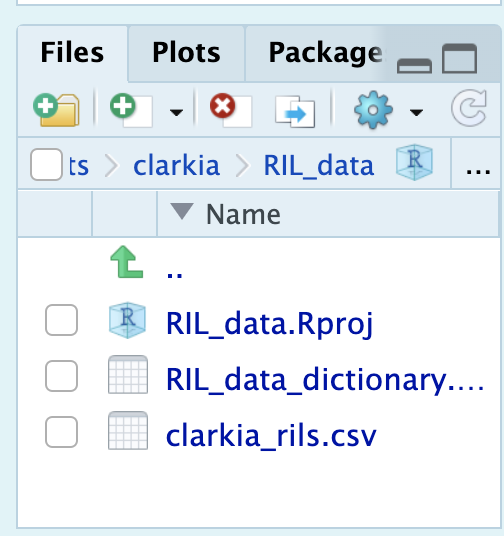
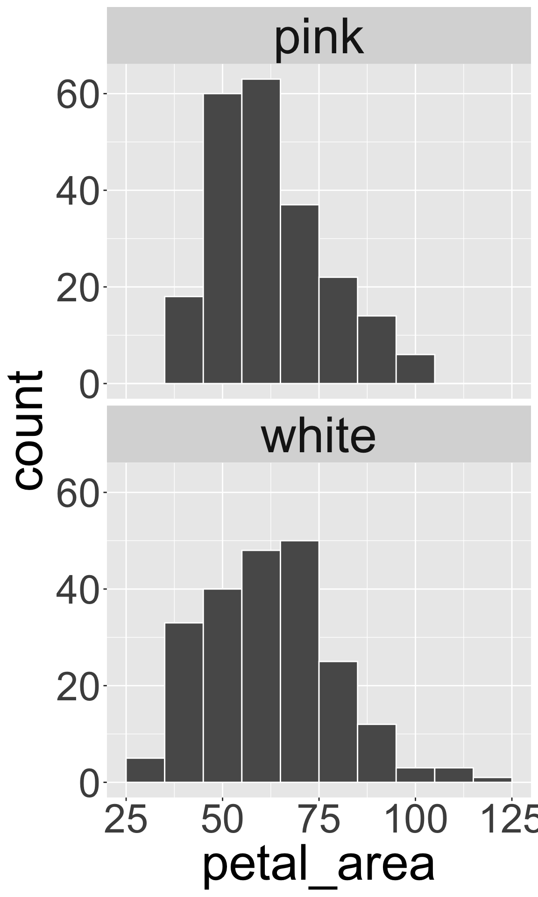

library(readr)
ril_data <- read_csv("clarkia_rils.csv")• 4. Reproducible analyses
This section includes background on: Making an R project, Loading data into R, Writing and saving R scripts (with comments), Cleaning and tidying data, and finally a reproducible code checklist (modified from The American Naturalist).
Motivating scenario: You are conducting a data analysis.
Learning goals: By the end of this chapter you should be able to
- Make an R Project, and open up R Studio via an R Project.
- Load data into R from your computer.
- Write an R script, following best practices for reproducible code.
In addition to the high-minded values of transparency and sharing scientific progress, there is a pragmatic and selfish reason to make you work reproducible.
As a scientist, “your closest collaborator is you six months ago, but you don’t reply to emails.”
Quote attributed to Mark Holder.
This humorous observation highlights a very real challenge. Research is complex and can stretch over months or even years. Well-documented data and code, allows you to retrace your steps, understand your past analyses, and explain your results. By keeping a good record of your workflows, you make your future self’s life much easier.
R Projects, Storing, and Loading data

setwd() function or to use a long, “absolute path” to the data.
I have previously introduced an easy way to load data from the internet into R, but often data is on our computer, not the internet. Loading data from your computer to R can be a difficult challenge, but if you follow the guide below you will see that it can be very easy.
Making an R project
The first step towards reproducible analyses is making an R project. I do this by clicking “File” > “New Project” and I usually use an existing directory (Navigating to the folder with my data and data dictionary that we just made).
Now every time you use R to work on these data, open R by double clicking on this project (or if R is already open, navigate to “Open Project”).
Loading data
Now if your project and data are in the same folder, loading the data is super easy. Again just used the read_csv() function in the readr package with an argument of the filename (in quotes) to read in the data!
Some people like a different structure of files in their R project – they like the project in the main folder and then a bunch of sub-folders like data and scripts and figures. If you are using this organization, just add the subfolder in the path (e.g. read_csv("data/my_data.csv") ).
Read excel files into R with the read_xlsx() from the readxl package). You can even specify the sheet as an argument!
R Scripts, Commenting Code, + Cleaning & Tidying data
We have just run a few lines of code – loading the readr library and assigning the data in clarkia_rils.csv to the variable, ril_data.
We will likely want to remember that we have done this, and build off it in the future. To do so let’s open up an R Script – by navigating to File, New File, R Script.
A new file, likely called Untitled 1 will show up in the R Scripts pane of your R Studio session. After giving it a more descriptive name, be sure save all of the code you are using for these analyses in this file.
Here I introduce the best practices for writing an R script (Part I). I revisit these in greater depth later in the chapter.
- First include your name, and the goal of the script as comments on the opening lines.
- Next load all packages you will use. Don’t worry, you can go back and add more later.
- Do not include
install.packages()in your script: You only want to do this once, so it should not be part of a reproducible pipeline. People can see they need to install the package from you loading it.
- Do not include
- Next load all the data you will use.
- Then get started coding.
- Be sure to comment your code with the
#.
Cleaning data
We previously said not to make column names too long, yet in our dataset, we have the variable petal_area_mm. We can use the rename() function in the dplyr package to give columns better names.
I do this below in my complete and well-commented R script, which I conclude with a small plot. Notice that anyone could use this script and get exactly what I got.

# Yaniv Brandvain. March 07 2025
# Code to load RIL data, and make a histogram of petal area facetted by petal color
library(readr) # Load the readr package to load our data
library(ggplot2) # Load the ggplot2 package to make graphs
ril_data <- read_csv("clarkia_rils.csv") |> # load the RIL data
filter(!is.na(petal_color)) |> # remove missing petal color data
rename(petal_area = petal_area_mm) # rename petal_area_mm as petal_area
ggplot(ril_data, aes(x = petal_area))+ # set up a plot with petal_area on x
geom_histogram(binwidth = 10, color = "white")+ # make it a histogram, with a bins of width 10 and separated by white lines
facet_wrap(~petal_color, ncol = 1) # wrap by petal color, with one columnIf your data set has many column names that are difficult to use in R, the clean_names() function in the janitor package fixes a bunch of them at once.
Tidying data
We have previously seen that there are many ways for data to be untidy. One common untidy data format is the “wide format”, below. Here, the columns SR and GC describe the proportion of hybrid seed on each ril (row) observed in each of these two locations. You can use the pivot_longer() function in the tidyr package, to tidy such data:
Code to create untidy_ril
library(tidyr)
library(dplyr)
untidy_ril <- ril_data |>
select(ril, location,prop_hybrid)|>
filter(location %in% c("GC","SR"))|>
pivot_wider(id_cols = "ril",
names_from = location,
values_from = prop_hybrid)
untidy_ril|>head(n = 5)|> kable()| ril | GC | SR |
|---|---|---|
| A1 | 0.000 | 0.00 |
| A100 | 0.125 | 0.25 |
| A102 | 0.250 | 0.00 |
| A104 | 0.000 | 0.00 |
| A106 | 0.000 | 0.00 |
library(tidyr)
pivot_longer(untidy_ril,
cols = c("GC","SR"),
names_to = "location",
values_to = "prop_hybrid")|>
head(n = 10)|>
kable()| ril | location | prop_hybrid |
|---|---|---|
| A1 | GC | 0.000 |
| A1 | SR | 0.000 |
| A100 | GC | 0.125 |
| A100 | SR | 0.250 |
| A102 | GC | 0.250 |
| A102 | SR | 0.000 |
| A104 | GC | 0.000 |
| A104 | SR | 0.000 |
| A106 | GC | 0.000 |
| A106 | SR | 0.000 |
Reproducible Code: A Checklist From AmNat
What you do to data and how you analyze it is as much a part of science as how you collect it. As such, it is essential to make sure your code:
- Reliably works – even on other computers
- And can be understood.
The principles from The American Naturalist’s policy about this are pasted in the box below:
REQUIRED:
Scripts should start by loading required packages, then importing raw data from files archived in your data repository.
Use relative paths to files and folders (e.g. avoid
setwd()with an absolute path in R), so other users can replicate your data input steps on their own computers.Make sure your code works. Shut down your R. (or type
rm(list=ls())into the console and run the code again. You should get the same results. If not, go back and fix your mistakes.Annotate your code with comments indicating what the purpose of each set of commands is (i.e., “why?”). If the functioning of the code (i.e., “how”) is unclear, strongly consider re-writing it to be clearer/simpler. In-line comments can provide specific details about a particular command.
- Note that ChatGPT is very good at commenting your code.
Annotate code to indicate how commands correspond to figure numbers, table numbers, or subheadings of results within the manuscript.
If you are adapting other researcher’s published code for your own purposes, acknowledge and cite the sources you are using. Likewise, cite the authors of packages that you use in your published article.
RECOMMENDED:
Test code ideally on a pristine machine without any packages installed, but at least using a new session.
Use informative names for input files, variables, and functions (and describe them in the README file).
Any data manipulations (merging, sorting, transforming, filtering) should be done in your script, for fully transparent documentation of any changes to the data.
Organize your code by splitting it into logical sections, such as importing and cleaning data, transformations, analysis and graphics and tables. Sections can be separate script files run in order (as explained in your README) or blocks of code within one script that are separated by clear breaks (e.g., comment lines, #————–), or a series of function calls (which can facilitate reuse of code).
Label code sections with headers that match the figure number, table number, or text subheading of the paper.
Omit extraneous code not used for generating the results of your publication, or place any such code in a Coda at the end of your script.